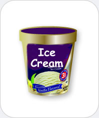

|  |
Ice cream
Chemicals you may find: Water Milk solids: lactose, caseins, whey proteins, minerals, proteins, citrates, and phosphates) Milk fats Sweeteners: sucrose, or for lower quality, industrial ice cream sweeteners derived from corn syrup Stabilizers: gelantin, polysaccharide food gums (such as carboxymethyl cellulose, carob bean gum, carrageenan, guar gum, sodium alginate, xanthan gum) Emulsifiers: In old recipies egg yolk or buttermilk, Industrially mono- and di-glycerides or Polysorbate 80 Flavors: vanillin, citrus fruits (e.g., citric acid), peppermint flavor(e.g., menthol, caramel(e.g., maltol, ethyl maltol) and many more |
| Ice cream is a colloid (a substance containing compounds in different states of matter) consisting of small ice crystals and air bubbles dispersed in liquid water and a network of destabilized fat globules. Ice cream contains milk or cream (chemically speaking an emulsion of fats, proteins, sugars and other chemicals in water), sugars, flavoring, and emulsifiers (e.g., egg yolk). Industrially manufactured ice cream may additionally contain stabilizers. The quality and consistency of ice cream is dependent on the particle size of the ice crystals (the smaller the better). Thawing and refreezing will deteriorate it as larger ice crystals form. Although the temperature of ice cream is well below the freezing point of water, about 25% of the water in the cream is not frozen at normal serving temperature, because of freezing point depression of the salt/sugar-water solution | |